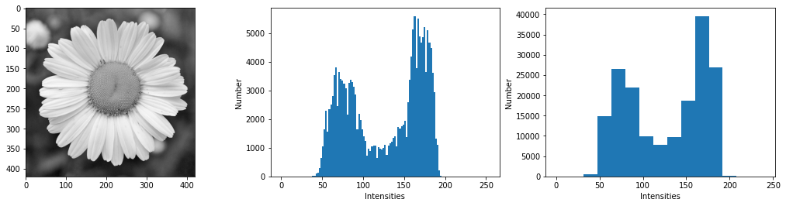
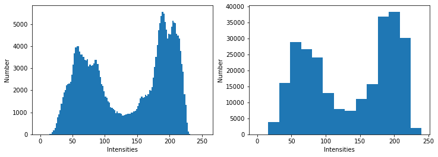
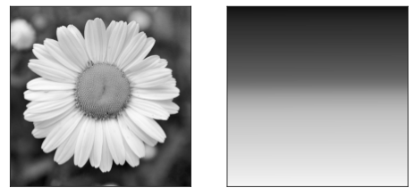

The histogram of a digital image depicts how the intensities of its pixels are distributed.
It is the discrete function \(h\) such that
\[
h(i) = n_i
\]
where \(n_i\) is the number of pixels with intensity \(i\).
The code below shows an image and two associated histograms.
The histograms are displayed as a bar plot, constituted as a set of bins.
The number (hence the width) of the bins are chosen by the user;
in the example below, we choose 128 bins and 16 bins.
Both histograms lie on \([0,255]\) which are the intensity range of the image.
importnumpyasnpimportskimage.ioasioimportmatplotlib.pyplotasplt# Load the imageimg=io.imread("../_static/figs/daisy.png",as_gray=True)*255# Display the imagefig,ax=plt.subplots(1,1,figsize=(5,5))ax.imshow(img,cmap="gray")plt.show()# Prepare the figure for the histogramsfig,axs=plt.subplots(1,2,figsize=(12,4))# Plot the first histogramaxs[0].hist(img.ravel(),# The image must be flattened to use function histbins=range(0,256,2)# Define 128 bins between 0 and 255)axs[0].set_xlabel("Intensities")axs[0].set_ylabel("Number")# Plot the second histogramaxs[1].hist(img.ravel(),# The image must be flattened to use function histbins=range(0,256,16)# Define 16 bins between 0 and 255)axs[1].set_xlabel("Intensities")axs[1].set_ylabel("Number")# Show the figureplt.show()


We distinguish two “modes” on the histogram.
The one on the left (intensities around 75) corresponds to the dark tones in the image (mainly the background).
The one on the right (intensities around 180) corresponds to the light tones (the petals and the center).
If the histogram \(h\) is normalized (i.e. the bins are divided by the pixel number \(M \times N\)),
then it can be seen as a discrete probability density function \(p\):
\[
p(i) = \frac{n_i}{M \times N}
\]
The histogram gives a global information about the pixel intensities of an image but looses the spatial information in the image.
In consequence, two different images can have the same histogram (cf. Fig. 20).

Fig. 20 These two images have the same histogram.
The image on the right actually corresponds to the pixels of the image on the left sorted with respect to their gray level.#